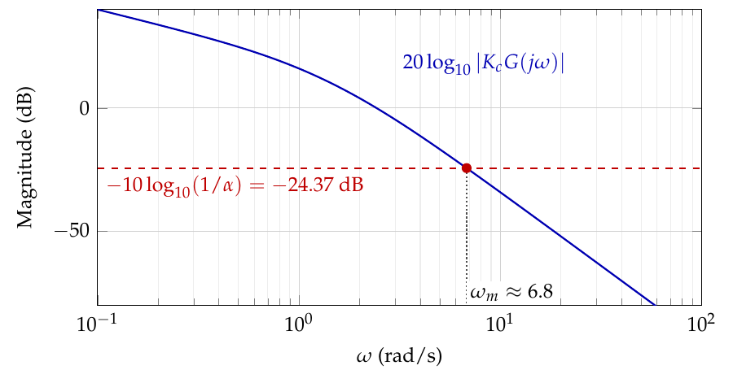

Every step behind the numbered results of the lecture notes. 19 derivations. Equation numbers and pages refer to the current edition of the notes; links from the PDF keep working across editions because they use names, not numbers.
Chapter 2 — Signal Representation: The Laplace Transform
Derivation of Eq. (2.17)Partial fraction coefficients $A$, $B$ for $\ddot x+3\dot x+2x=0$
Step by step: on the left, $10\logd\left(\omega_c^2+2^2\right)=20\logd\sqrt{\omega_c^2+4}$, so the left-hand side is a single logarithm; on the right, $-10\logd(1/\alpha)=20\logd\sqrt{\alpha}$ and $-20\logd(10)=20\logd(1/10)$. Hence
The first equation says that $\atan\left(\omega_{\phi}\right)+\atan\left(0.5\omega_{\phi}\right)=90^{\circ}$. Taking the tangent of both sides and using $\tan(a+b)=\frac{\tan a+\tan b}{1-\tan a\tan b}$,
This cubic has a single positive root. It lies between $x=3$ (where the left-hand side is $-16$) and $x=3.5$ (where it is $18.1$), and refining the search (or using roots([1 5 4 -100]) in MATLAB) gives $x=3.248$, that is, $\omega_g=\sqrt{3.248}=1.802$.
On the Bode plot
When no calculator or MATLAB is at hand, there is a simpler way. By definition, $\omega_g$ is the frequency at which the magnitude of $K_cG(j\omega)$ crosses $0$ dB, so it can be read directly on the Bode magnitude plot (Figure 8.27): draw the horizontal line at $0$ dB, mark the point where it meets the magnitude curve, and drop a vertical line from that point to the frequency axis. It lands at $\omega_g\approx1.8$ rad/s. A careful reading on a logarithmic axis is accurate to about two significant digits, which is all the design needs.
that is, $\atan\left(\omega_c\right)+\atan\left(0.5\omega_c\right)=40^{\circ}$. Taking the tangent of both sides, with $\tan(a+b)=\frac{\tan a+\tan b}{1-\tan a\tan b}$,
The right-hand side is $20\logd\left(\sqrt{\alpha}/K_c\right)$, and $|G(j\omega)|=\frac{1}{\omega\sqrt{\omega^2+1}\sqrt{(0.5\omega)^2+1}}$, so the equation reads
With the unrounded value $\alpha=\frac{1-0.99272}{1+0.99272}=0.003656$ we have $400/\alpha=1.094\times10^{5}$, and the only positive root of the cubic (found numerically, e.g. with roots) is $x\approx46.2$, and $\omega_m=\sqrt{x}$. This
results in
On the Bode plot
The cubic is the hard part of this computation, and it can be avoided. Adding $20\logd K_c$ to both sides of the equation for $\omega_m$ gives
so $\omega_m$ is simply the frequency at which the magnitude plot of $K_cG$ (Figure 8.33) crosses $-24.37$ dB. Draw the horizontal line at that level, mark the point where it meets the magnitude curve, and drop a vertical line from that point to the frequency axis, as in Figure 8.34: it lands at $\omega_m\approx6.8$ rad/s.
Figure 8.33. Lead-lag compensator design. Bode diagram of the
uncompensated system $K_cG(s)$.

Figure 8.34. Graphical solution for $\omega_m$ in the lead-only attempt: $\omega_m$ is where the magnitude of $K_cG(j\omega)$ crosses $-10\log_{10}(1/\alpha)=-24.37$ dB.
Derivation of Eq. (8.28)Desired crossover frequency $\omega_c$ in the lag-only attempt (lead-lag example)
Since $\angle K_cG(j\omega)=-90^\circ-\atan(\omega)-\atan(0.5\omega)$, this is $\atan(\omega_c)+\atan(0.5\omega_c)=35^\circ$. Taking the tangent of both sides, with $\tan(a+b)=\frac{\tan a+\tan b}{1-\tan a\tan b}$,
The same frequency can be found graphically, without solving the quadratic (Figure 8.36). On the phase plot of $K_cG$, draw the horizontal line at $-125^\circ$, mark the point where the phase curve crosses it, and drop a vertical line from that point to the frequency axis: it lands at $\omega_c\approx0.42$ rad/s. Going straight up from the same point to the magnitude plot gives $20\log_{10}|K_cG(j\omega_c)|\approx26.5$ dB, which is $20\log_{10}\beta$, the excess gain the lag must remove. Converting from decibels, $\beta\approx10^{26.5/20}\approx21.2$, in agreement with the computation below.
Figure 8.36. Graphical solution for $\omega_c$ in the lag-only attempt: $\omega_c$ is where the phase of $K_cG(j\omega)$ crosses $-125^\circ$ (bottom), and the magnitude of $K_cG$ at that frequency is $20\log_{10}\beta$ (top).
Derivation of Eq. (8.29)Attenuation factor $\beta$ in the lag-only attempt (lead-lag example)
To solve it by hand, notice that $\omega_m$ will be well above both corner frequencies of the lag portion ($0.13$ and $0.014$ rad/s), where $\left|\frac{T_2j\omega+1}{\beta T_2j\omega+1}\right|\approx\frac{T_2\omega}{\beta T_2\omega}=\frac{1}{\beta}$. The equation then becomes
whose only positive root is $x\approx2.34$, that is, $\omega_m\approx\sqrt{2.34}=1.53$ (solving the exact equation, without the approximation $1/\beta$, gives the same value to two digits).
On the Bode plot
Here too the cubic can be replaced by a reading of the Bode plot. Draw the magnitude of the loop with the lag portion, $K_c\frac{T_2s+1}{\beta T_2s+1}G(s)$, draw the horizontal line at $-10$ dB, and drop a vertical line from the point where they meet to the frequency axis (Figure 8.39). Equivalently, since the lag portion only lowers the magnitude by $20\logd\beta=19.08$ dB at these frequencies, one can use the plot of $K_cG$ in Figure 8.33 and look for the level $-10+19.08=9.08$ dB.
Figure 8.39. Graphical solution for $\omega_m$ in the lead-lag design: $\omega_m$ is where the magnitude of the loop with the lag portion, $K_c\frac{T_2j\omega+1}{\beta T_2j\omega+1}G(j\omega)$, crosses $-10$ dB.Figure 8.33. Lead-lag compensator design. Bode diagram of the
uncompensated system $K_cG(s)$.